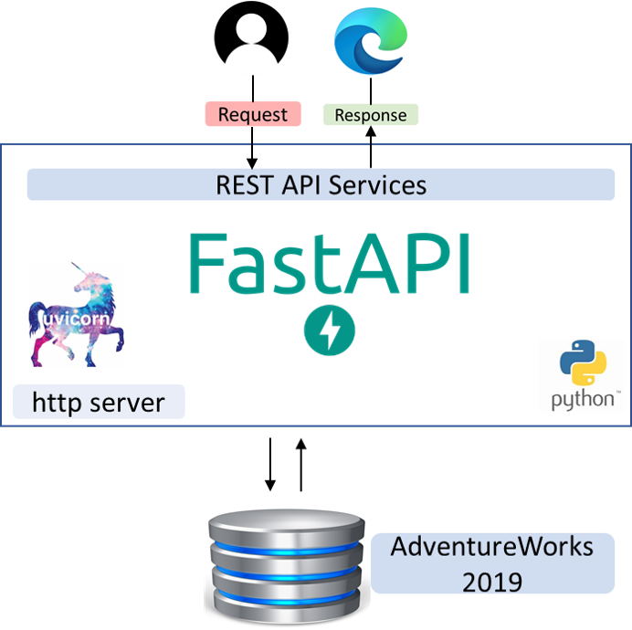
In this tutorial, you are going to learn the basics of designing and developing an API with endpoints using FastAPI and integrating your application to a database. Upon successful connection to the database, you will also register a user and authorise access using JSON Web Token (JWT). Understanding the concepts and practical elements of developing an API is a valuable skillset and something many employers are looking for in terms of development, security and eventual deployment to the cloud (DevSecOps).
By now, you are familiar with the initial FastAPI project/application setup. However, this is repeated so that each workshop presents a complete walkthrough.
OK - to start developing a FastAPI project, first create a folder on the desktop, you can call it MyCoursework. Next, open Visual Studio Code (ensure there are no folders/files open when it has launched, if so close them), open the MyCoursework folder and trust its content if you see the pop up:
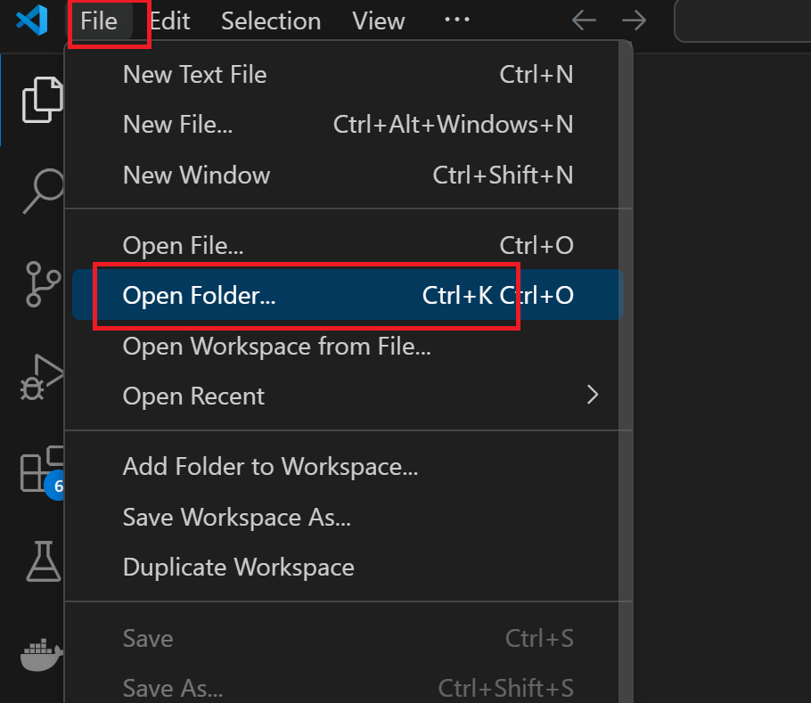
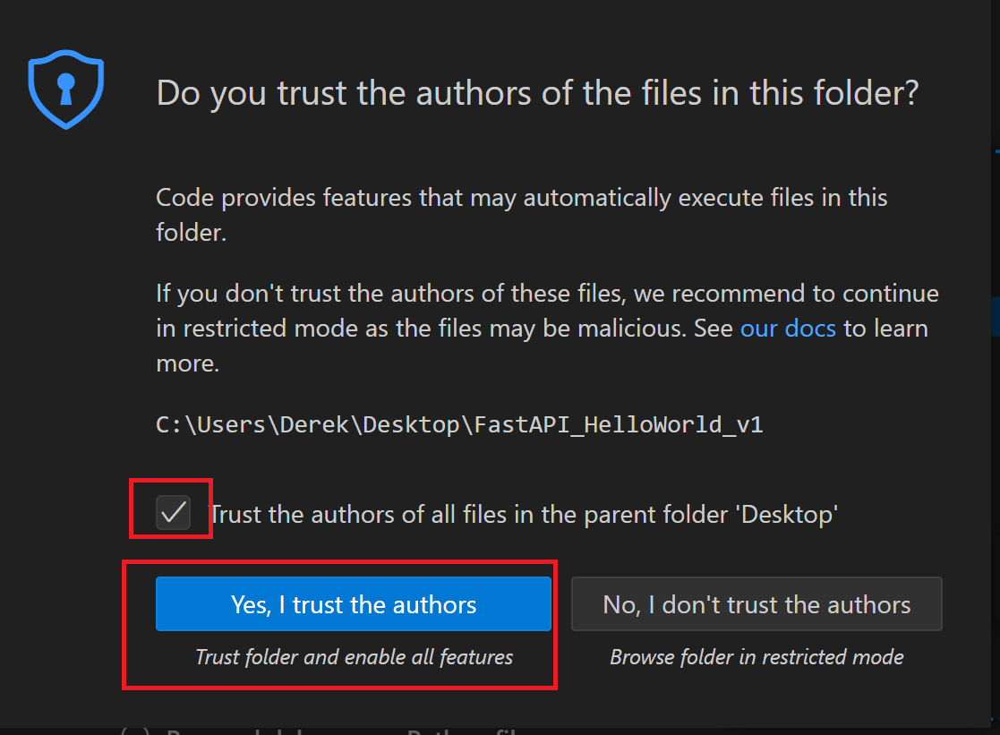
You will now see your folder is open in VSC on the left panel. Next, create a file called requirements.txt:
The requirements.txt file lists the dependencies you wish to install for the application. The requirements.txt file is a common practice in Python development, used to specify the libraries that your project relies on and their versions. This file helps ensure that anyone working on the project can recreate a similar development environment, making it a convenient component for maintaining consistency. Add the below dependencies to the file:
fastapi
mysqlclient
uvicorn
pyjwt
passlib[bcrypt]
bcrypt==3.2.0
Next, save the file either by File>Save or CTRL+S.
The lines of code you have added to requirements.txt will install FastAPI for creating the API app, uvicorn to work as the local server to host and test the API, and mysqlclient for handling data storage and interacting with a MySQL database. Passlib is a password hashing library for Python 2 & 3, which provides cross-platform implementations of over 30 password hashing algorithms, as well as a framework for managing existing password hashes, while bcrypt is a library to help you hash passwords. PyJWT is a library for encoding and decoding a JWT file.
Next, you will setup a virtual environment to debug and test the FastAPI app, as well as download the dependencies in the requirements.txt file, follow the steps below:
1. Open the command palette (Ctrl+Shift+P) and select the Python: Create Environment command (you may need to type 'create environment' to see it in list):
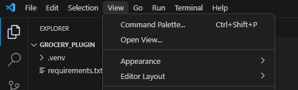
2. Select the Venv environment type:
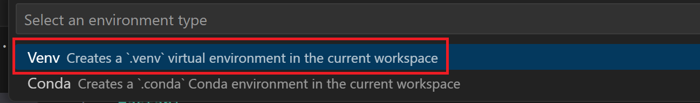
3. Next, select the latest version (if more than one version available) of Python on the machine:
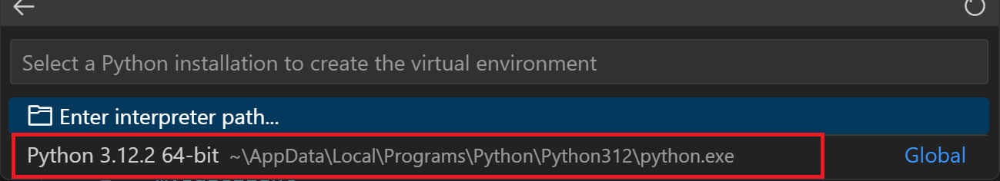
4. Next, select the requirements.txt file from the dropdown list, so the dependencies are automatically installed, and then select OK:
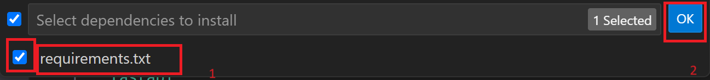
5. The virtual environment will now be created and could take a minute or two to install. This means the dependencies will automatically beinstalled, and the environment selected (Venv) for your workspace to be used by the Python extension.
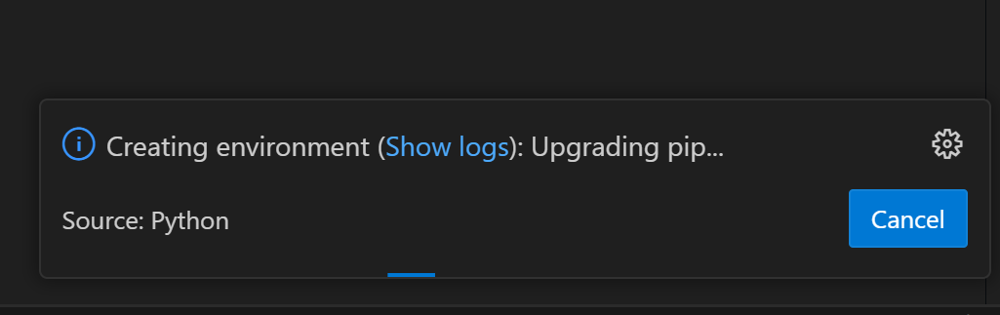
6. With the project folder configured, you can now start coding the app. Create a new python file called main.py, ensure it is placed outside the Venv folder:
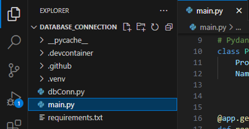
7. Next, enter the below code in the main.py file
from itertools import product
from fastapi import FastAPI, HTTPException, Depends, status
from pydantic import BaseModel
from typing import List, Optional
from dbConn import conn
app = FastAPI()
# Pydantic model to define the schema of the data for PUT POST DELETE
class Products(BaseModel):
ProductID: int
Name: str
@app.get("/")
def root():
return {"message": "Introducing my coursework"}
Now that we have the FastAPI main python file, we can define our database connection.
8. Create a new Python file with File > New File… and then select Python File. Add the following lines to your new file and save as dbConn.py,
import MySQLdb
# Database configuration
db_config = {
'host': 'localhost',
'user': 'root',
'passwd': 'computing',
'db': 'AdventureWorks2019',
}
# Create a connection to the database
conn = MySQLdb.connect(**db_config)
8b. Create a new Python file with File > New File… and then select Python File. Add the following lines to your new file and save as auth.py. The auth.py will hold your authentication logic that the Endpoints will use
import jwt
from fastapi import HTTPException, Security
from fastapi.security import HTTPAuthorizationCredentials, HTTPBearer
from passlib.context import CryptContext
from datetime import datetime, timedelta
class AuthHandler():
security = HTTPBearer()
pwd_context = CryptContext(schemes=["bcrypt"], deprecated="auto")
secret = 'SECRET'
def get_password_hash(self, password):
return self.pwd_context.hash(password)
def verify_password(self, plain_password, hashed_password):
return self.pwd_context.verify(plain_password, hashed_password)
def encode_token(self, user_id):
payload = {
'exp': datetime.utcnow() + timedelta(days=0, minutes=5),
'iat': datetime.utcnow(),
'sub': user_id
}
return jwt.encode(
payload,
self.secret,
algorithm='HS256'
)
def decode_token(self, token):
try:
payload = jwt.decode(token, self.secret, algorithms=['HS256'])
return payload['sub']
except jwt.ExpiredSignatureError:
raise HTTPException(status_code=401, detail='Signature has expired')
except jwt.InvalidTokenError as e:
raise HTTPException(status_code=401, detail='Invalid token')
def auth_wrapper(self, auth: HTTPAuthorizationCredentials = Security(security)):
return self.decode_token(auth.credentials)
9. Save the main.py, auth.py & dbConn.py file and then run the code by either going to Run>Start Debugging or hit [F5]. From the dropdown menus, select Python Debugger and then FastAPI as below:
This invokes uvicorn to start the application server through the debugger and allow you to step through the source code to inspect its behaviour. You should see something like the following under the terminal tab in bottom pane of VSC.
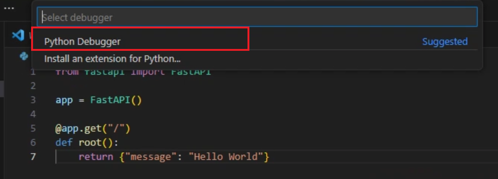
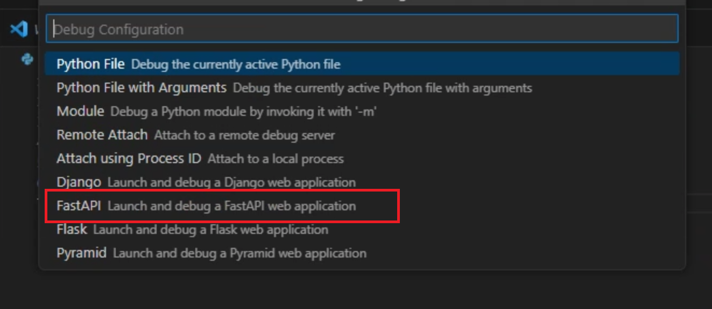
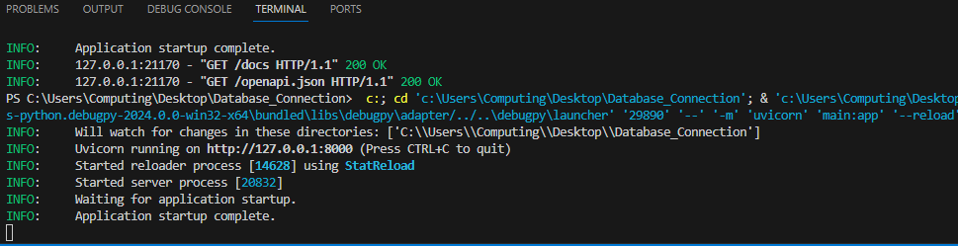
10. Open Docker Desktop app on your local machine to start your AdventureWorks database server. AdventureWorks database is a popular sample database for developers and database administrators. The database contains data such as the parts and materials to manufacture cycles as well as customer information.
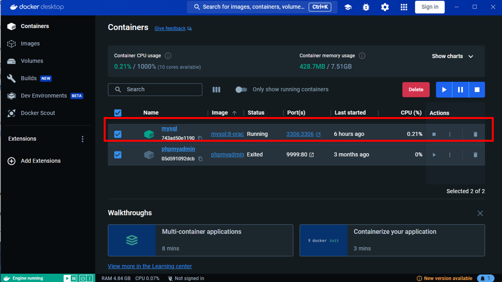
11. In the context of web applications, routes are like pathways that map specific URLs to the code that handles them. These routes serve as the entry points for the different functionality within application. When a client, sends a request to your application with a particular URL, FastAPI routes that request to the appropriate function (also known as route handler or view function) based on the URL, and that function processes the request and generates a response. Replace your main.py file with the following code to update the route with three (3) different POST, (2) GET, (1) PUT and (1) DELETE requests:
from itertools import product
from fastapi import FastAPI, HTTPException, Depends, status
from pydantic import BaseModel
from typing import List, Optional
from dbConn import conn
from auth import AuthHandler
from schemas import AuthDetails
app = FastAPI()
# Pydantic model to define the schema of the data for GET PUT POST DELETE
class Products(BaseModel):
ProductID: int
Name: str
class ProductQuantities(BaseModel):
ProductID: int
Name: str
ProductNumber: str
TotalQuantity: int
SafetyStockLevel: int
ReorderPoint: int
StandardCost: float
ListPrice: float
class EmployeePay(BaseModel):
BusinessEntityID: int
NationalIDNumber: int
Name: Optional[str] = None
OrganizationLevel: Optional[int] = None
JobTitle: Optional[str] = None
Rate: float
PayFrequency:int
auth_handler = AuthHandler()
users = []
@app.post('/register', status_code=201)
def register(auth_details: AuthDetails):
if any(x['username'] == auth_details.username for x in users):
raise HTTPException(status_code=400, detail='Username is taken')
hashed_password = auth_handler.get_password_hash(auth_details.password)
users.append({
'username': auth_details.username,
'password': hashed_password
})
return
@app.post('/login')
def login(auth_details: AuthDetails):
user = None
for x in users:
if x['username'] == auth_details.username:
user = x
break
if (user is None) or (not auth_handler.verify_password(auth_details.password, user['password'])):
raise HTTPException(status_code=401, detail='Invalid username and/or password')
token = auth_handler.encode_token(user['username'])
return { 'token': token }
@app.get("/products/all", response_model=List[Products])
def unprotected():
cursor = conn.cursor()
query = "SELECT ProductID, Name FROM Production_Product LIMIT 50"
cursor.execute(query)
item = cursor.fetchall()
cursor.close()
if item is None:
raise HTTPException(status_code=404, detail="Item not found")
item = [Products(ProductID=productitem[0], Name=productitem[1]) for productitem in item]
return item
#@app.get('/protected')
#def protected(username=Depends(auth_handler.auth_wrapper)):
#return { 'name': username }
###
# The GET endpoint will retrieve all products that have the SUM of inventory quantity lower than the stated reorder point.
@app.get("/products/reorder", response_model=List[ProductQuantities],)
def get_all_reorder_products():
cursor = conn.cursor()
# Query, execute and fetchall below are used to retrieve
cursor.execute("SELECT Production_Product.ProductID, Production_Product.Name, Production_Product.ProductNumber, SUM(Production_ProductInventory.Quantity), Production_Product.SafetyStockLevel, Production_Product.ReorderPoint, StandardCost, ListPrice FROM AdventureWorks2019.Production_Product LEFT JOIN Production_ProductInventory ON Production_Product.ProductID = Production_ProductInventory.ProductID GROUP BY ProductID HAVING SUM(Production_ProductInventory.Quantity) <= Production_Product.ReorderPoint;") #SQL query executed
item = cursor.fetchall()
# Error handling in case there are no products matching this query.
if cursor.rowcount == 0:
raise HTTPException(status_code=404, detail="No product found to reorder")
cursor.close()
item = [ProductQuantities(ProductID=productitem[0], Name=productitem[1], ProductNumber=productitem[2], TotalQuantity=productitem[3], SafetyStockLevel=productitem[4], ReorderPoint=productitem[5], StandardCost=productitem[6], ListPrice=productitem[7]) for productitem in item]
return item
# PUT endpoint that allows list price information stored in the Production_Product table to be changed/updated.
@app.put("/products/change/listprice/{productId}/{listPrice}")
def update_list_price(productId: int, listPrice: float):
cursor = conn.cursor()
# Error handling ensures that the ProductID/product exists before changes are made.
query = ("SELECT ProductID FROM AdventureWorks2019.Production_Product WHERE ProductID=%s;")
cursor.execute (query, (productId,))
item = cursor.fetchone()
if item is None:
raise HTTPException(status_code=400, detail="Product not found")
# Query, execute and commit will PUT the new data to the database.
query = ("UPDATE AdventureWorks2019.Production_Product SET ListPrice=%s, ModifiedDate=Now() WHERE ProductID=%s;")
cursor.execute (query, (listPrice, productId))
conn.commit()
cursor.close()
# HTTPException is used to confirm that the PUT has completed.
raise HTTPException(status_code=200, detail="Price has been updated")
# DELETE endpoint that allows review to be deleted from the Production_ProductReview table.
@app.delete("/products/delete/review/{productReviewId}",tags=["Protected"])
def delete_product_review(productReviewId: int, username: str = Depends(auth_handler.auth_wrapper)):
cursor = conn.cursor()
# Error handling ensures that ProductReviewID/product review exists before it is deleted.
query = ("SELECT ProductReviewID FROM AdventureWorks2019.Production_ProductReview WHERE ProductReviewID=%s;")
cursor.execute (query, (productReviewId,))
item = cursor.fetchone()
if item is None:
raise HTTPException(status_code=400, detail="Review not found")
# Query, execute and commit below will DELETE the specified data from the database.
query = ("DELETE FROM AdventureWorks2019.Production_ProductReview WHERE ProductReviewID=%s;")
cursor.execute (query, (productReviewId,))
conn.commit()
cursor.close()
# HTTPException is used to confirm that the DELETE has completed successfully.
raise HTTPException(status_code=200, detail="Review has been deleted")
@app.post("/products/new/review/{productId}/{reviewerName}/{emailAddress}/{rating}", tags=["Protected"])
def add_new_product_review(productId: int, reviewerName: str, emailAddress: str, rating: int, comment: str, username: str = Depends(auth_handler.auth_wrapper)):
cursor = conn.cursor()
# Error handling and data consistency, ensures that the ProductID/product to be reviewed already exist in the database.
query = ("SELECT ProductID FROM AdventureWorks2019.Production_Product WHERE ProductID=%s;")
cursor.execute (query, (productId,))
item = cursor.fetchone()
if item is None:
raise HTTPException(status_code=400, detail="Product does not exist")
# Data consistency ensures that the rating can only be between 1 and 5.
if rating < 1 or rating > 5:
raise HTTPException(status_code=400, detail="Product is only rated between 1 and 5")
# Retrieves the new unique primary key identifier for the INSERT INTO query.
query = ("SELECT IFNULL((SELECT (MAX(ProductReviewID) +1) FROM AdventureWorks2019.Production_ProductReview), '1');")
cursor.execute (query)
productReviewId = cursor.fetchone()
# Query, execute and commit below will POST the data to the database.
query = ("INSERT INTO AdventureWorks2019.Production_ProductReview VALUES (%s , %s, %s, (NOW()), %s, %s, %s, (NOW())); ")
cursor.execute (query, (productReviewId, productId, reviewerName, emailAddress, rating, comment))
conn.commit()
cursor.close()
# HTTPException is used to confirm that the POST has succeeded.
#raise HTTPException(status_code=200, detail="New product review has been added")
return {
"message": "New product review has been added successfully",
"reviewed_by": username,
"product_id": productId
}
12. Start the debugger (F5), and then navigate to http://127.0.0.1:8000/docs in the browser. There should be a Swagger interface with four(7) endpoints available in the app.
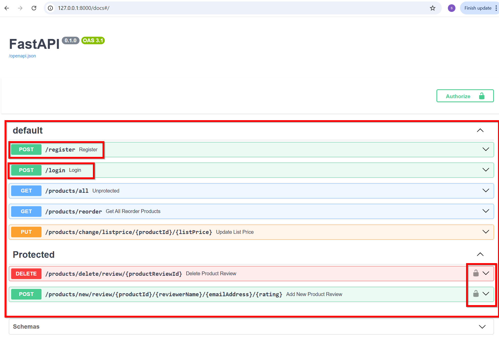
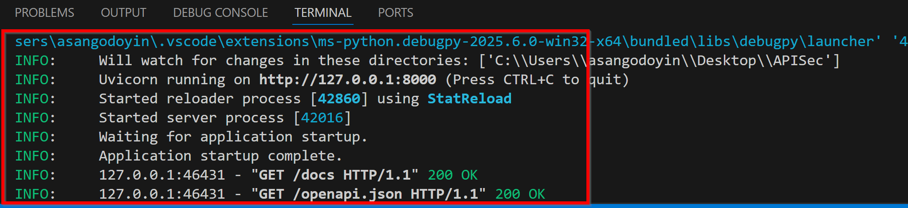
13. Select the drop down arrow next to the /POST/register route to expand it, and then the Try it out button that appears on the right side. Enter a username and password to register a user
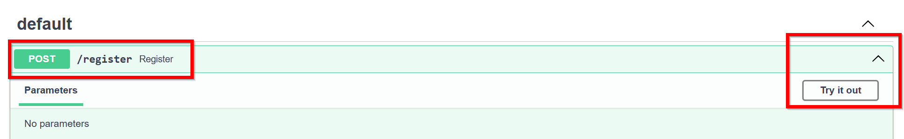
14. Select the drop down arrow next to the /POST/login route to expand it, and then the Try it out button that appears on the right side. Enter a the registered username and password to obtain a token. Copy the token and use it to authorise the user in the protected tag endpoints
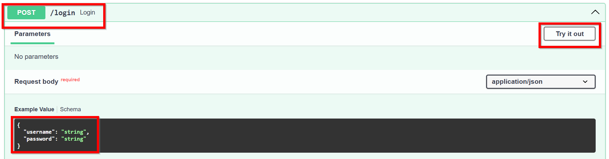
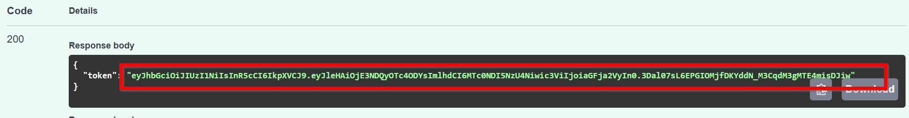
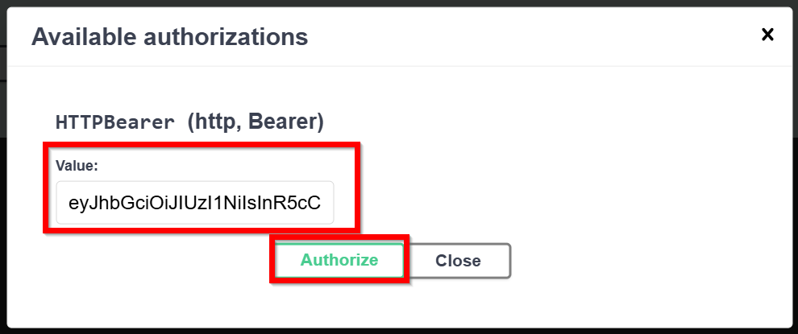
Thats all for this week. We have covered integrating API to database and authentication which is an integral part of your coursework. Next workshop will be an assessment support session.